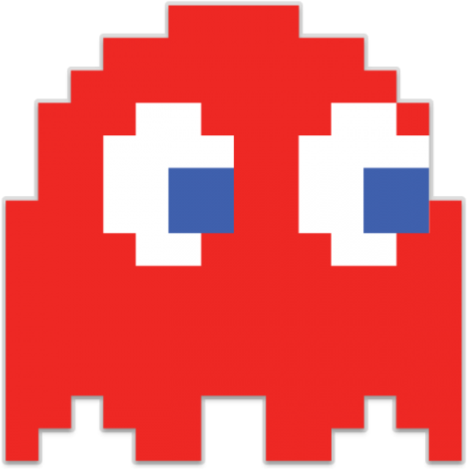

Виды монстров

Блинки
Блинки, чье настоящее имя Амэ указан как Тень, это красный призрак, который в оригинальной
аркадной игре следует за Pac-Man. Его считают лидером призраков. В мультфильме Pac-Man Блинки (озвучивает Чак Макканн) тупоумный и трусливый в отношении грамматических проблем. В Pac-Man и Ghostly Adventures Блинки (озвучивает Ян Джеймс Корлетт в сериале и Люсьен Додж в видеоигре и сиквеле) является лидером Призрака по умолчанию. Семья Банды и стремится помочь победившей стороне. Блинки получает прибавку к скорости после того, как было убрано несколько пак-гранул. Этот режим неофициально упоминается как «Cruise Elroy», но в оригинальных японских конструкторских документах упоминается как «спурт-режим».
Пинки
Пинки, настоящее имя которой указано как Спиди, - розовая женщина-призрак, которая в
оригинальной аркадной игре использует тактику засады, чтобы расположиться перед Пакманом, чтобы окружить ему. В мультфильме Pac-Man Пинки (озвучивает Чак Макканн ) изображен как тупоумный мужчина-оборотень. В последних играх, а также в Pac-Man и Ghostly Adventures Пинки (озвученный Эшли Болл в сериале и Джулией Кливер в видеоигре и сиквеле) изображается как женщина снова влюблена в Pac-Man, что часто ставит ее в противоречие с Цилиндрией.

Инки
Инки, настоящее имя которого указано как Bashful, - голубой призрак, у которого в оригинальной
аркадной игре непостоянное настроение. Он может быть непредсказуемым. Иногда он агрессивно преследует Пакмена, как Блинки; в других случаях он прыгает вперед Пак-Мэна, как это сделал бы Пинки. Иногда он мог даже уйти, как Клайд. В мультфильме Pac-Man Инки (озвучивает Барри Гордон ) изображен тусклым и психом. В Pac-Man и Ghostly Adventures Инки (озвучивает Ли Токкар в сериале и Брайс Папенбрук в видеоигре и сиквеле) является самым молодым участником. Он самый умный, но большую часть времени ему не хватает концентрации. В Pac-Man Инки любит появляться перед лицом Pac-Man.
Клайд
Клайд, чье настоящее имя указано как Поки, - оранжевый призрак, который в оригинальной аркадной
игре ведет себя глупо. Он будет преследовать Пакмана в манере Блинки, но уйдет в свой домашний угол, когда подойдет слишком близко. В г-жа Pac-Man , этого призрака зовут Сью, а в мл. Pac-Man , этого призрака зовут Тим. В мультсериале Клайд (озвучивает Нил Росс ) является лидером группы. В последних играх, а также в Pac-Man и Ghostly Adventures Клайд (озвученный Брайаном Драммондом в сериале, а также в видеоигре и сиквеле) изображен как большое привидение, простое, но не лишенное интеллекта. и аппетит у него такой же, как у Пакмана. Ему не хватает коварной натуры своих братьев и сестер и он внимателен к другим.